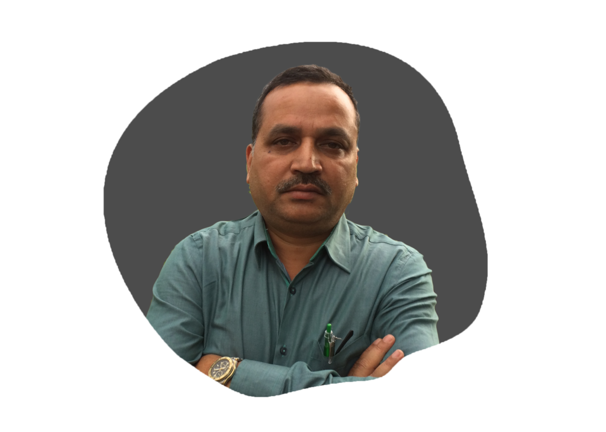
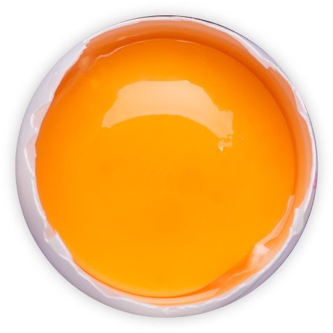
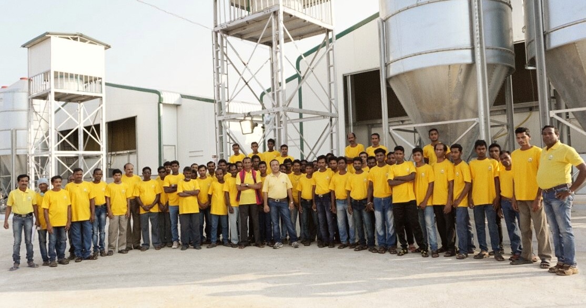

Mission and Vision
At Ovofarm we believe any business big or small has an obligation towards the society to enrich lives and livelihood.
We strongly believe, people irrespective of their nationality or location should have access to the best quality food. To attain equality in food , producers need to step forward to challenge the status quo with disruptive technologies , attaining scale to mass produce quality products at affordable prices. We strive to bring our customers hygienic and safe eggs by pioneering technological adoption and following global best practices. We are bringing highest quality eggs at par with international standards to one of the most backward areas. Our production facilities also engage hundreds of workers from an area known in India as the migrant worker exporter. Our operations have helped improve the livelihood of hundreds of families in a few villages. We educate consumers on the benefits of eating healthy and safe food as well as the role of egg in addressing the chronic malnourishment problem in our region. Our consistent efforts has not only created a niche market for high quality eggs but also encouraged many conventional poultry farms to shift to advanced farming.
About OVO Farm
Farm Process
From giving high-quality nutritious feed to hens to auditing of eggs, our farm processes ensure freshness, uniformity and high shelf life of eggs. We take great care to ensure maximum hygiene by
- Keeping closed houses for dirt-free eggs
- Automated egg collection. No human contact
- Optimum temperature in the egg storages
About Quality
With the changing times, OVO Farm has gained widespread expertise in innovative poultry farm processes and researches to improve hens’ well-being, food safety, and environment protection.
 About People
Over the last two decades of poultry farming we have expanded in leaps and bounds, thanks to our fundamental approach to doing business. We pride ourselves on small-town values of quality and service like that of a small farmer. This attitude not only keeps us closer to our flocks but also helps empower our people by giving them ownership of barns that motivates them to work as farmers rather than employees.
